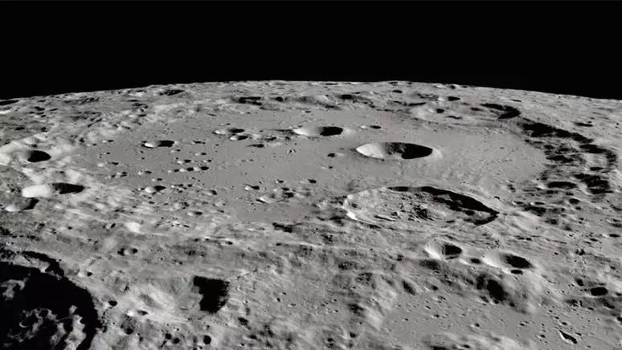
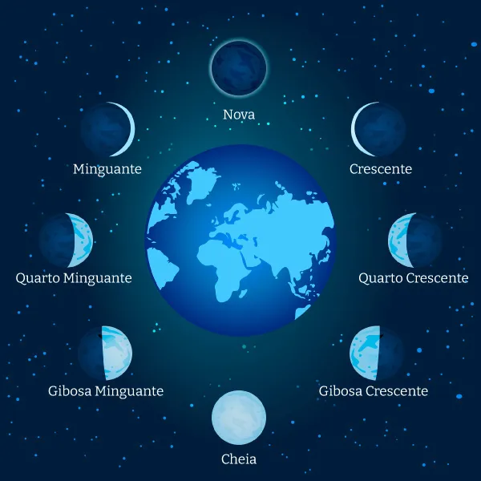
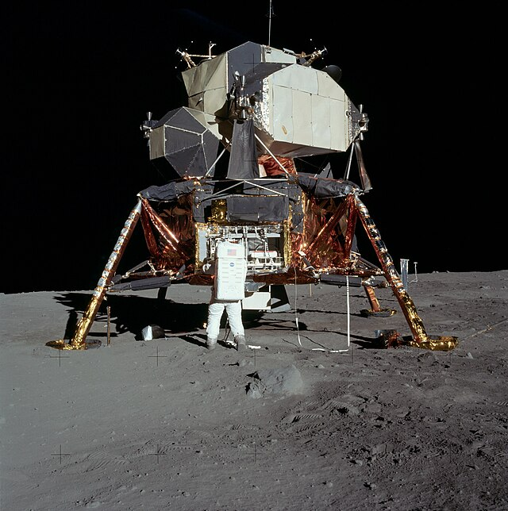
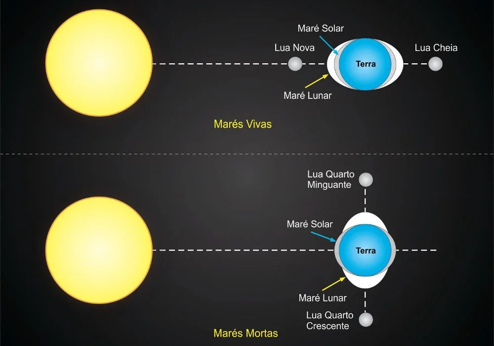

A Nossa Lua
Descubra tudo sobre o nosso satélite natural, a Lua, e sua importância para a Terra e para a vida como a conhecemos.
Características da Lua
A Lua é o único satélite natural da Terra e o quinto maior satélite do sistema solar. Com um diâmetro de aproximadamente 3.474 km, ela representa cerca de 1/4 do diâmetro da Terra. Sua superfície é marcada por crateras, montanhas e mares lunares, que são vastas planícies de lava solidificada. A Lua não possui uma atmosfera significativa, o que resulta em temperaturas extremas, variando de -173 °C à noite a 127 °C durante o dia.
Além disso, a Lua possui uma gravidade que é cerca de 1/6 da gravidade da Terra, o que significa que os objetos pesam muito menos em sua superfície. Isso permite que os astronautas se movam com facilidade e saltem mais alto do que na Terra. A Lua também possui uma rotação sincrônica, o que significa que sempre vemos a mesma face dela a partir da Terra.
Fases da Lua
A Lua passa por várias fases durante seu ciclo de 29,5 dias, que são causadas pela sua posição em relação à Terra e ao Sol. As principais fases são:
- Lua Nova: A Lua está entre a Terra e o Sol, e sua face iluminada não é visível.
- Quarto Crescente: A Lua aparece como um semicírculo, iluminada pela luz solar.
- Lua Cheia: A Lua está oposta ao Sol, e sua face iluminada é totalmente visível.
- Quarto Minguante: A Lua novamente aparece como um semicírculo, mas agora iluminada na parte esquerda.
Essas fases não apenas influenciam a aparência da Lua no céu, mas também têm um impacto significativo nas marés e em várias culturas ao redor do mundo, que associam cada fase a diferentes significados e rituais. Por exemplo, a Lua Cheia é frequentemente associada a celebrações e festivais em muitas culturas.
Exploração da Lua
A Lua foi visitada pela primeira vez pelos astronautas da missão Apollo 11 em 1969. Neil Armstrong e Buzz Aldrin foram os primeiros humanos a caminhar em sua superfície, enquanto Michael Collins orbitava em torno dela. A famosa frase de Armstrong, "Um pequeno passo para um homem, um grande salto para a humanidade", ecoou em todo o mundo, simbolizando a conquista da exploração espacial.
Desde então, várias missões foram realizadas para estudar a Lua mais de perto. As missões Apollo trouxeram amostras lunares para a Terra, permitindo que os cientistas estudassem a composição da Lua e sua formação. Além das missões Apollo, sondas não tripuladas, como a Lunar Reconnaissance Orbiter, têm mapeado a superfície lunar em alta resolução, revelando novos detalhes sobre sua geologia e história.
Atualmente, a exploração lunar continua com novas missões planejadas, incluindo a Artemis da NASA, que visa levar humanos de volta à Lua e estabelecer uma presença sustentável lá.
Curiosidades sobre a Lua
- A Lua está se afastando da Terra a uma taxa de cerca de 3,8 cm por ano, o que significa que ela estava muito mais próxima de nós no passado.
- Uma "lua cheia" ocorre quando a Lua está oposta ao Sol em relação à Terra, e isso acontece uma vez por mês.
- As temperaturas na superfície da Lua podem variar drasticamente, de -173 °C à noite a 127 °C durante o dia, devido à falta de atmosfera.
- A Lua tem um efeito significativo nas marés da Terra devido à sua gravidade, influenciando os ciclos de água e a vida marinha.
- O lado da Lua que vemos da Terra é sempre o mesmo devido ao fenômeno de rotação sincrônica, o que significa que a Lua gira em torno de seu eixo na mesma taxa que orbita a Terra.
- A Lua é o único corpo celeste fora da Terra onde os humanos já pisaram.
Impacto da Lua na Terra
A Lua desempenha um papel crucial em vários fenômenos na Terra. Sua gravidade é responsável pelas marés, que são o movimento regular da água dos oceanos. As marés variam entre maré alta e maré baixa, e sua intensidade pode ser influenciada pela posição da Lua em relação à Terra e ao Sol.
Além disso, a presença da Lua estabiliza a inclinação axial da Terra, o que ajuda a regular as estações. Sem a Lua, a inclinação da Terra poderia variar drasticamente, resultando em mudanças climáticas severas que poderiam afetar a vida como a conhecemos. A Lua também tem um efeito psicológico e cultural significativo sobre a humanidade, inspirando mitos, lendas e obras de arte ao longo da história.
